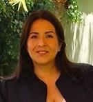
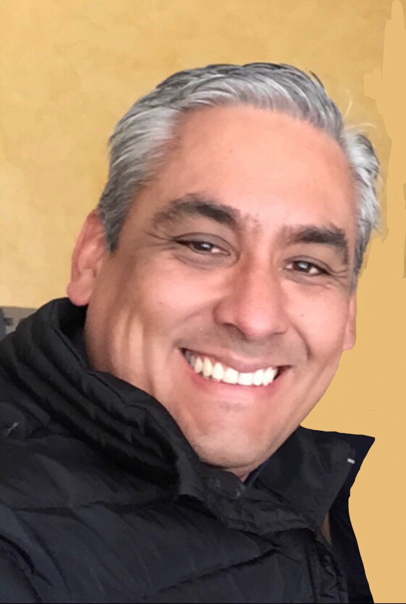

Nuestro equipo de especialistas en medicina crítica cuenta con la más alta formación académica y experiencia clínica en el manejo integral del paciente en estado crítico. Certificados, comprometidos y en constante actualización para brindar la mejor atención.
Cada miembro de nuestro equipo de terapia intensiva es un profesional altamente calificado, con certificaciones vigentes y participación activa en docencia e investigación.
Anestesiólogo intensivista y académico de la Universidad Nacional Autónoma de México. Proporciona atención médica de alta calidad a pacientes críticos, combinando conocimientos actualizados con habilidades técnicas avanzadas. Utiliza herramientas como la monitorización hemodinámica, la ventilación mecánica y el manejo del dolor para garantizar el bienestar de los pacientes durante procedimientos quirúrgicos y en la unidad de cuidados intensivos.

Médica intensivista con más de 20 años de experiencia clínica, académica y docente en unidades de cuidados intensivos de alta complejidad. Especialista en el manejo integral del paciente crítico y neurocrítico, con experiencia avanzada en sepsis, ventilación mecánica, monitoreo neurológico multimodal y soporte hemodinámico. Profesora de posgrado avalada por la UNAM con amplia trayectoria en formación de recursos humanos.

Especialista en Medicina Crítica con formación troncal de Medicina Interna y más de 20 años de actividad asistencial, académica y de investigación clínica en unidades de Terapia Intensiva polivalentes. Tiene particular experiencia en soporte cardiopulmonar/renal, ecocardiografía y ultrasonografía del enfermo grave, coagulación, traqueostomía percutánea e investigación.